Former Postdocs
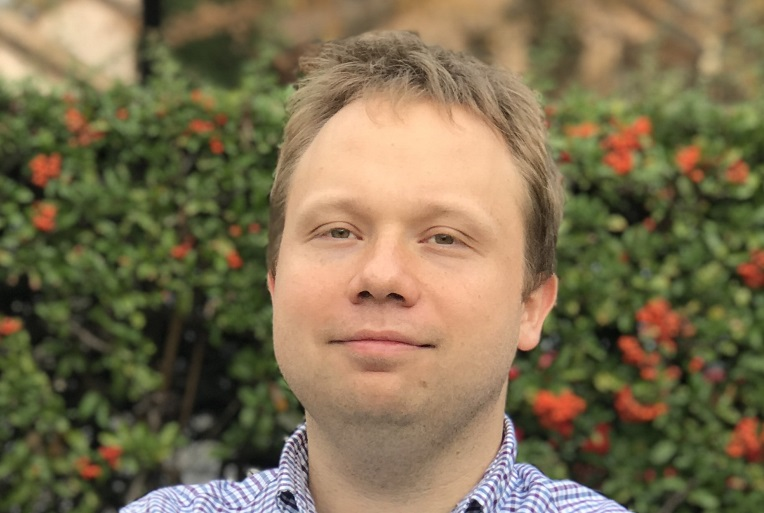
Michal Muszynski
Michal Muszynski is a postdoctoral research associate (SNSF fellowship holder) carrying out interdisciplinary research at the intersection of computer science, neuroscience, medicine, and psychology. He received his Ph.D. in Computer Science from the University of Geneva in 2018. His research interests are in the areas of affective computing, affective neuroscience, multimodal deep machine learning, pattern recognition, signal processing, and big data. As part of the MultiComp lab, Michal brings his work experience in physiological and behavioural signal analysis.
Jeffrey Girard
Jeffrey Girard is a postdoctoral research associate working in the interdisciplinary space between psychology, medicine, and computer science. He completed his PhD in Clinical Psychology at the University of Pittsburgh in 2018 and has been collaborating with computer scientists at CMU since 2010. He is interested in how internal factors (e.g., emotion, personality, and psychopathology) and external factors (e.g., context, culture, and group processes) influence human behavior. As part of the MultiComp lab, Jeffrey brings expertise in facial computing, statistical analysis, and psychological theory.
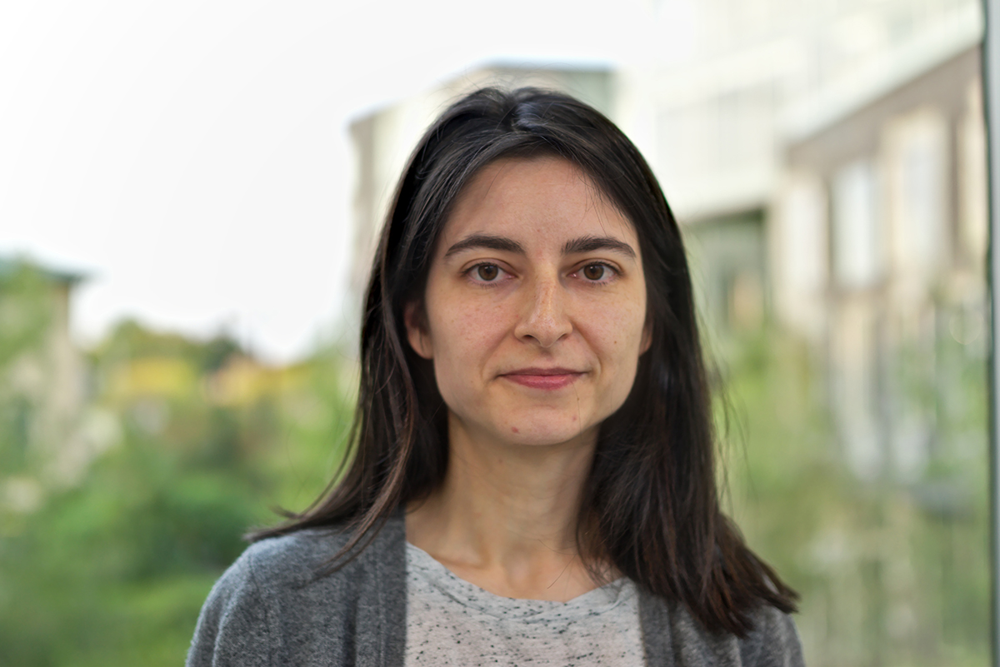
Elif Bozkurt
Elif Bozkurt was a post-doctoral associate at the Language Technologies Institute, Carnegie Mellon University. Her primary research interests include nonverbal human behavior analysis, speech and multimodal signal processing particularly for healthcare applications. She received both her PhD and MS degrees in Electrical and Electronics Engineering from Koc University. Her PhD research focused on affective speech-driven gesture synthesis. During her MS she worked on emotion recognition from speech.
Amir Zadeh
Amir Zadeh is an Artificial Intelligence Ph.D student at Carnegie Mellon University. His research is focused on Multimodal Deep Learning both theory and applied. From theoretical perspective he is interested in building foundations of multimodal machine learning. From application perspective, he is keen on giving computers capability to understand human communication as a multimodal signal involving language, gestures and voice. His research spans different areas of natural language processing, computer vision and speech processing. He started his Ph.D in January 2015. Prior to that he received his Bachelors of Science from University of Tehran, ECE department, where he was a member of Advanced Robotics Laboratory.
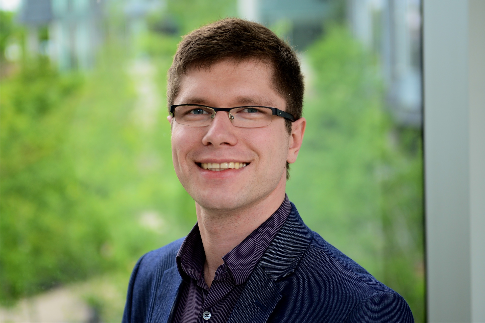
Tadas Baltrušaitis
Tadas Baltrušaitis was a post-doctoral associate at the Language Technologies Institute, Carnegie Mellon University. His primary research interests lie in the automatic understanding of non-verbal human behaviour, computer vision, and multimodal machine learning. In particular, he is interested in the application of such technologies to healthcare settings, with a particular focus on mental health. Before joining CMU, he was a post-doctoral researcher at the University of Cambridge, where he also received his Ph.D and Bachelor’s degrees in Computer Science. His Ph.D research focused on automatic facial expression analysis in especially difficult real world settings.
Former PH.D Students
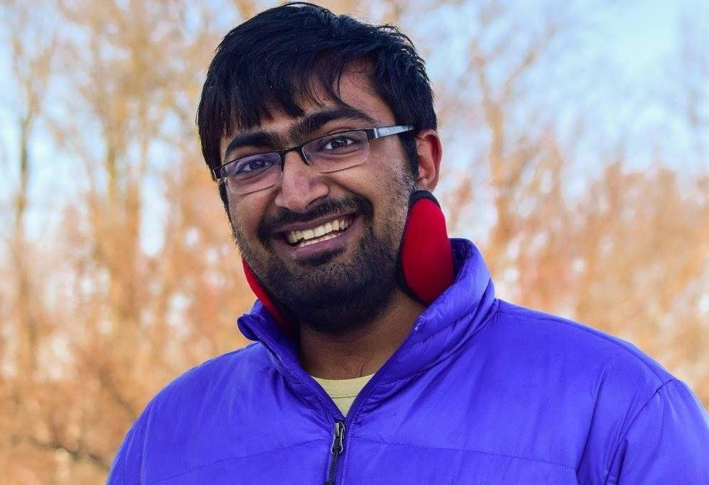
Chaitanya Ahuja
Chaitanya Ahuja is a doctoral student in Language Technologies Institute in the School of Computer Science at Carnegie Mellon University. His interests range in various topics in natural language, computer vision, computational music, and machine learning. He is currently working on various representation models for multimodal machine learning with Louis-Philippe Morency. Before starting with graduate school, Chaitanya completed his B.Tech at Indian Institute of Technology, Kanpur where he worked on Speech Source Separation and Spatial Audio with Rajesh Hegde.
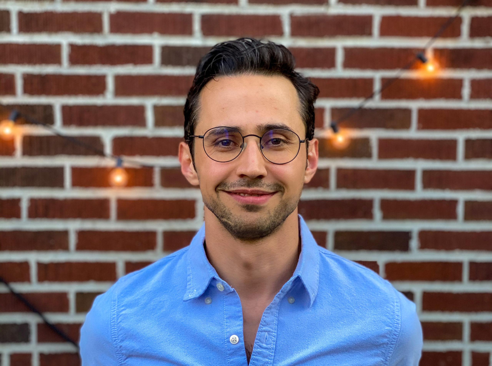
Volkan Cirik
Volkan was a doctoral student at Language Technologies Institute in the School of Computer Science. His interests range on various topics in natural language, computer vision, and machine learning. Volkan finished a Master’s degree in word vectors for structured prediction at Koç AI Lab with Deniz Yuret. During his second Master’s in Carnegie Mellon, he worked on various topics such as event detection in the biomedical domain, visualization, and analysis of neural network models with Teruko Mitamura, Eduard Hovy, and Louis-Philippe Morency. Before starting his graduate studies, he completed his B.S in computer engineering at Boğaziçi University.
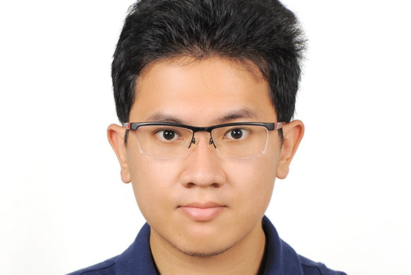
Yao-Hung Hubert Tsai
Hubert is a Ph.D. student in the Machine Learning Department at Carnegie Mellon University under the supervision of Dr. Ruslan Salakhutdinov and Dr. Louis-Philippe Morency. His research interests lie in Deep Learning and its applications, especially in Multi-modal and Multi-view Learning and Statistical Machine Learning. He obtained his B.S. in E.E. from National Taiwan University. He is supported by Facebook Fellowship.
Former Masters Students
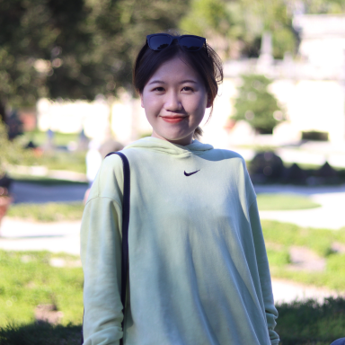
Yinghuan Zhang
Yinghuan is a graduate student in Master of Information Technology Strategy (MITS) program at CMU. Her research interests include cross-modal supervision, representation learning, and few-/zero-shot learning in multimodal learning. Prior to joining CMU, she worked on efficient neural architecture search at Shanghai Qi Zhi Institute for 1 year. She received a B.E in Geotechnical Engineering at Harbin Institute of Technology.
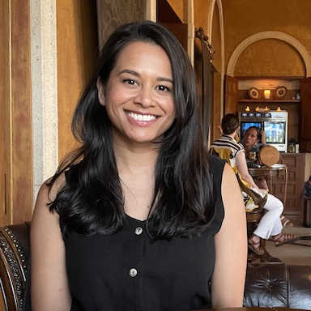
Sanika Natu
Sanika Natu is a Master’s student in the School of Computer Science at Carnegie Mellon University. Her research interests include multimodal learning, affective computing, computational ethics, and health/behavior analytics. In the MultiComp Lab, she is currently working on research for grounding text, image, and language in educational lecture videos. Before joining her Master’s program at CMU she received her B.S. in Information Systems at CMU and worked for a few years in industry.
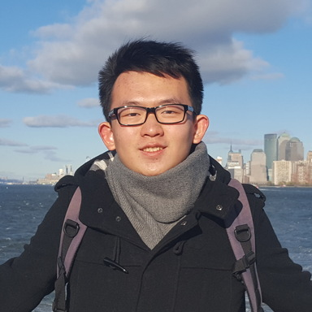
Yuxin Xiao
Yuxin Xiao is a Machine Learning Master student at CMU. His long-term research goal is to safely automate decision-making in society with knowledge extracted from structured data. He is currently working on quantifying the uncertainty in pre-trained language models via empirical studies. He previously earned a B.S. in Computer Science and a B.S. in Statistics and Mathematics from UIUC.
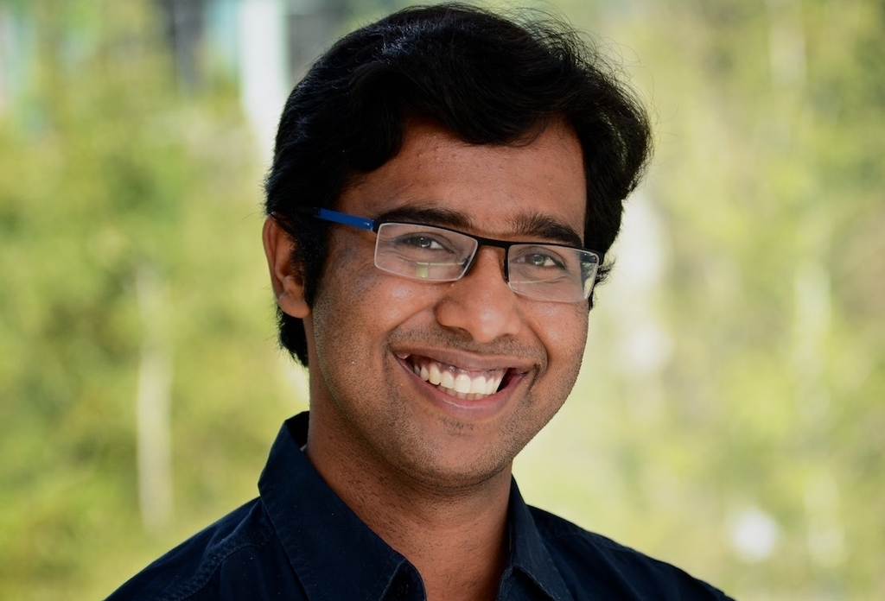
Vasu Sharma
Vasu is presently pursuing his Masters in Language Technologies from the School of Computer Science at CMU. His primary areas of interest are Multimodal Machine Learning, Dialog Systems, Question Answering and building explainable and robust Deep Learning models via adversarial training.
He is presently working on trying to decode and reconstruct the Neural Basis of Real World Social Perception by trying to find relations between intra-cranial EEG signals and human expressions, pose, actions, emotions etc. He is also working on designing adversarial attack to test the robustness of Visual Question Answering Models and build training pipelines which make these models robust to such adversarial attacks. He is also interested in various facets of facial expression analysis.
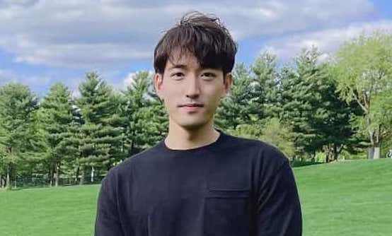
Dong Won Lee
Don is a Machine Learning Masters student in Carnegie Mellon University. He is working to build models to understand the relationship between what we see (vision) and what we hear (language) and implement these findings to interesting applications in education, human-robot-interaction, and robotics control.
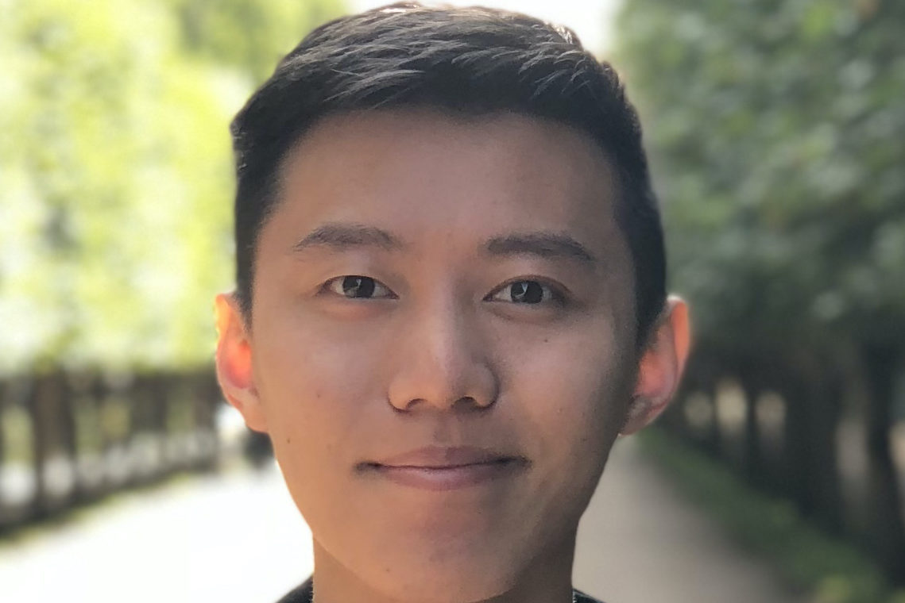
Peter Wu
Peter is a Masters student in the Machine Learning Department. His current research focuses on multimodal learning, audio processing, and natural language processing. Other areas he’s worked on include federated learning and machine learning for healthcare.
Hongliang Yu
Hongliang Yu was a Masters student in Language Technologies Institute. His research interests lie in multimodal machine learning and natural language processing. He received his B.S. and M.S. from School of Electronics Engineering and Computer Science at Peking University.
Former Graduate Research Assistants
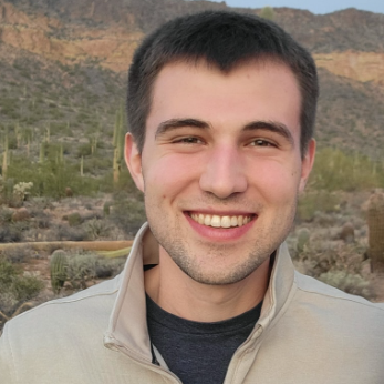
Blake Martin
Blake is a master’s student in Machine Learning. His primary research interests are in deep learning for computer vision and natural language processing, with a current focus on multilingual machine translation. He previously received a B.S.E. is Data Science from the University of Michigan, where his research focused on machine learning applications in human health and behavior.
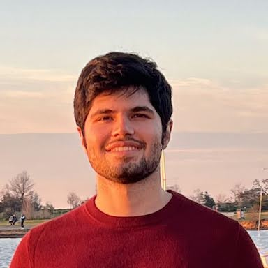
Pratik Joshi
Pratik Joshi is a Master’s student in the Language Technologies Institute in the School of Computer Science at Carnegie Mellon University. His research interests revolve around multimodal learning, commonsense reasoning, and multilingual systems. He is currently working on implementing continual learning techniques for multimodal generation to accommodate domain shift. Prior to joining CMU, he worked at Google Research and Microsoft Research for 2 years on problems in natural language inference, semantic parsing, and low-resource language analysis. He graduated with a Bachelor’s in Computer Science from BITS Pilani.
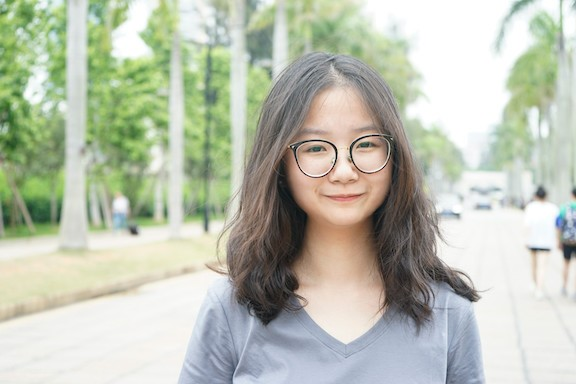
Catherine Cheng
Catherine Cheng is a Master’s student in Machine Learning Department. Her research interests include multimodal co-learning, representation learning, and potential alignment between language and emotion representation. She has previously worked on the robustness evaluation of multimodal models. She received a B.S. in Computer Science and a B.S. in Mathematical Science at Carnegie Mellon University.
Yiwei Lyu
Yiwei Lyu is a Master’s student in Machine Learning. His research focuses on multimodal machine learning, evaluation and interpretation of multimodal models, and multimodal pretraining/transfer learning. He has previously worked on text style transfer and automated software repair. He has earned a B.S. in Computer Science at Carnegie Mellon University.
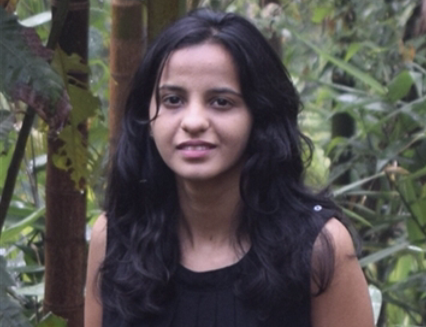
Navya Yarrabelly
Navya is a Masters’s student at Language Technologies Institute in the School of Computer Science. Her interests lie in representation learning for graphs, Text to SQL, topic modeling. Her current work is on language grounding in image captions. Navya received her bachelor’s degree from IIIT-Hyderabad and has worked at Microsoft Research, where she worked with Ayush Choure and Prateek Jain on relevance ranking problems for large-scale social networks. Navya works with Volkan on identifying and linking object mentions in image captions.
Muqiao Yang
Muqiao is a graduate student at CMU. His research interest is about understanding real-world problems and mechanisms with machine learning techniques. Prior to joining CMU, he received his bachelor degree from The Hong Kong Polytechnic University.
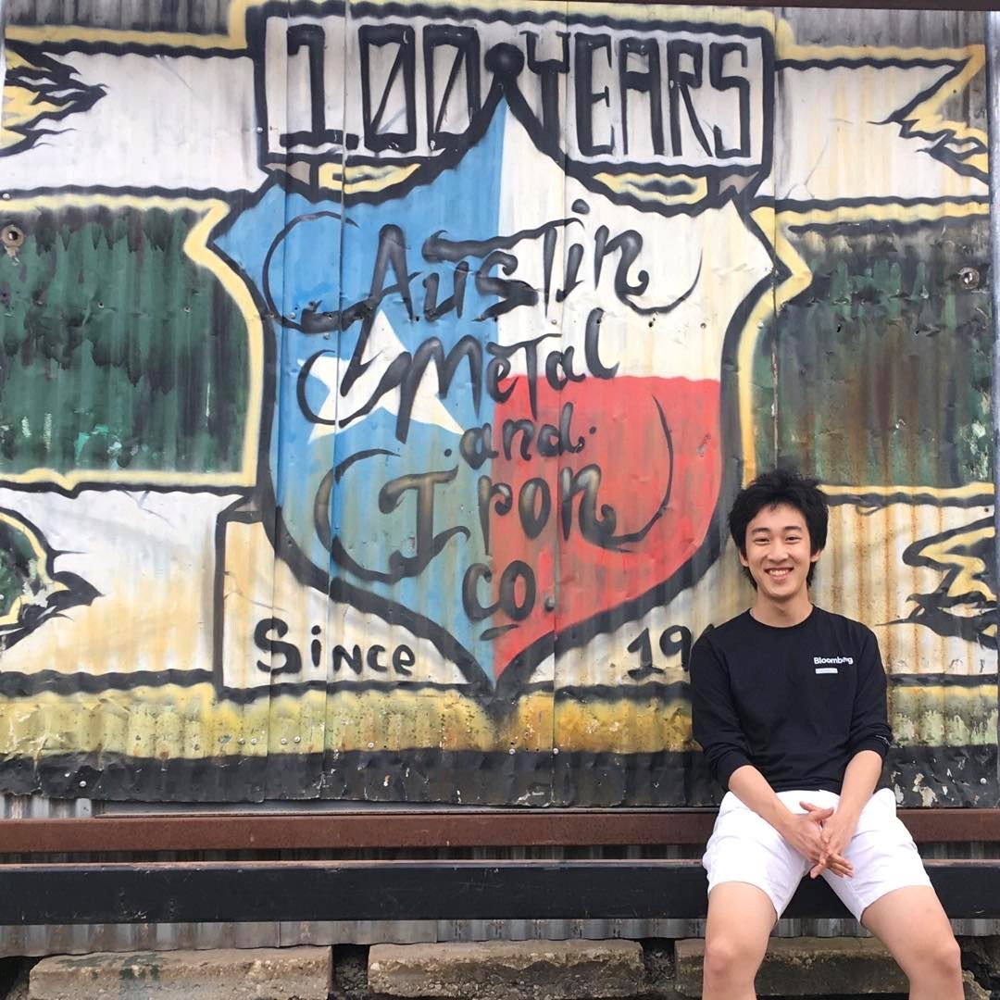
Tianjun (TJ) Ma
TJ is currently a fifth year master’s student in the school of computer science, advised by Louis-Philippe Morency. His research interests include multimodal signal processing, assistive technologies, and visual QA.
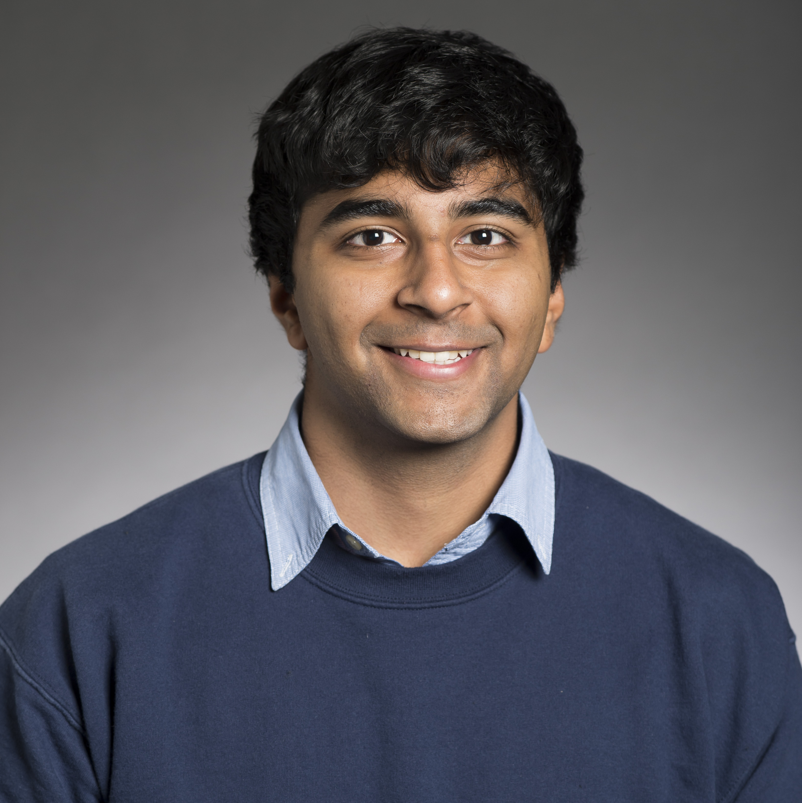
Tejas Srinivasan
Tejas is a second-year Master’s student in the Language Technologies Institute at CMU. Tejas is currently working on Multimodal Co-learning to build models that are robust to missing modalities during inference time. He has worked on a number of research projects in the space of NLP, including multimodal speech recognition, dialog, and machine translation. Prior to joining CMU, he worked on end-to-end speech translation at the Indian Institute of Technology, Bombay.
Zeeshan Ashraf
Zeeshan Ashraf is a graduate student at Carnegie Mellon University. His research interests lie in multimodal machine learning, computer vision and generative modelling. Currently he is also working on low resource machine translation and VQA using unstructured knowledge. He looks to learn more about and undertake research in Bayesian Learning. Previously, he has worked on gradient estimation in Stochastic Neural Networks at International Institute of Information Technology, Hyderabad.
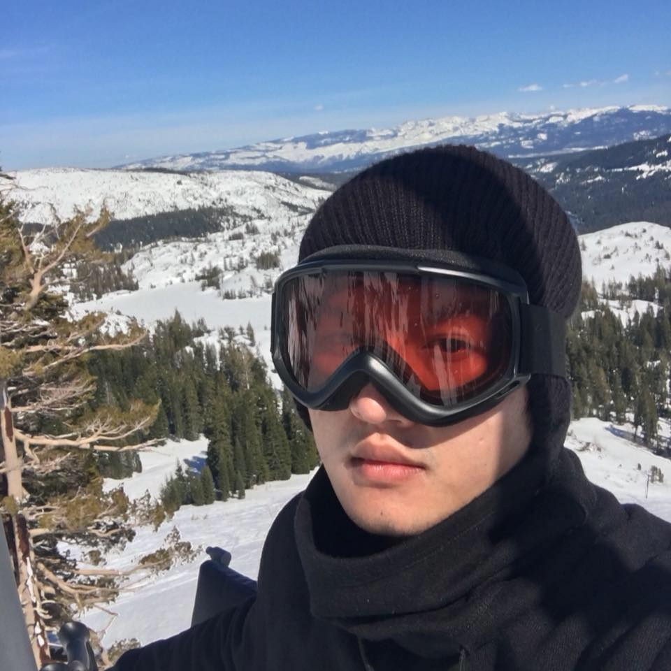
Chengfeng Mao
Chengfeng Mao is a second-year master student in Computer Science at Carnegie Mellon University. He is passionate about machine learning and applying it to solve real-world problems. During his study at CMU, he has also been working on multimodal machine learning applied to video sentiment analysis and multimodal generation with Professor L.P. Morency. Prior to attending CMU, he had worked at Yahoo, Cask, and Google Cloud as a software engineer, specializing in big data infrastructure development. He received his bachelor’s degree in Computer Engineering from the University of Illinois at Urbana-Champaign.
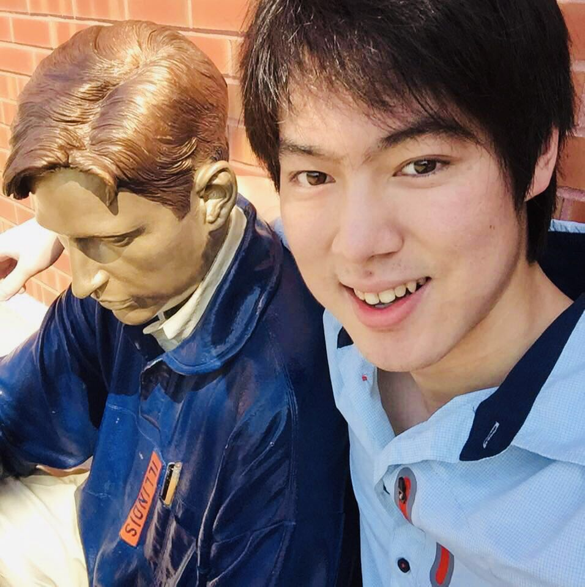
Qingtao Hu
Qingtao is a first-year master student in Language Technologies Institute in the School of Computer Science at Carnegie Mellon University. His research interests lie in deep learning, probabilistic graphical models, data mining and information extraction. In particular, he is interested in disentangling and reconstructing phoneme and emotion information in speech using deep learning approaches. Prior to joining Carnegie Mellon, he obtained his B.S. in Computer Engineering from University of Illinois at Urbana-Champaign, where he worked on analyzing how different roles in stack exchanges affect their sizes.
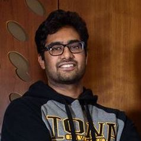
Anirudha Rayasam
Anirudha Rayasam is a Masters student in Language Technologies Institute in the School of Computer Science at Carnegie Mellon University. His interests range in various topics in natural language, computer vision, deep learning and reinforcement learning. He is currently working on human pose forecasting conditioned on rich natural language descriptions.
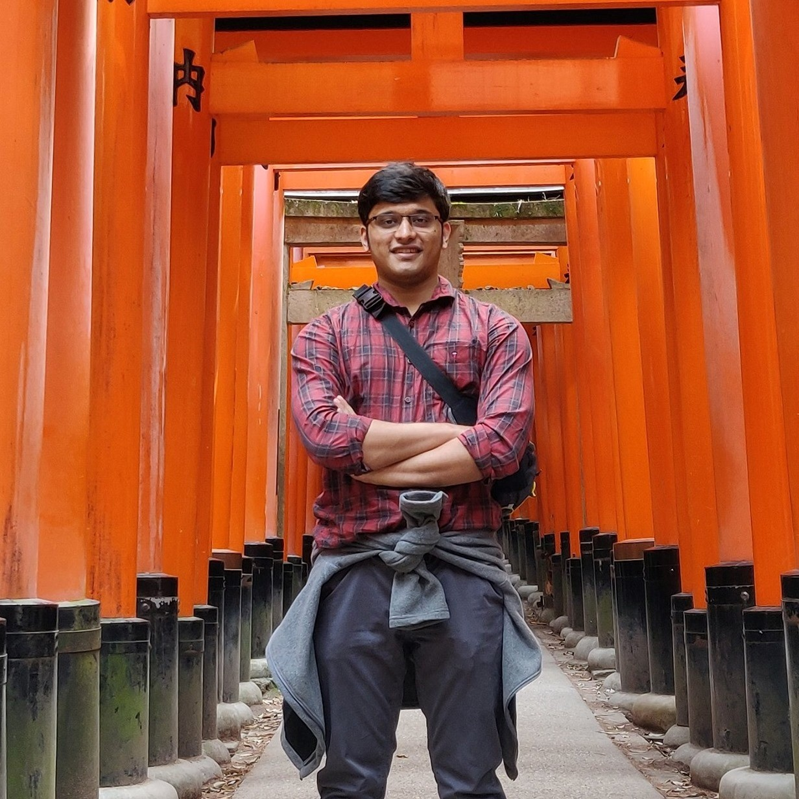
Atabak Ashfaq
Atabak Ashfaq is a first-year Masters student at the Language Technologies Institute at the School of Computer Science at CMU. He is working on active learning techniques to optimize annotation collection process. His research interests lie in the field of active learning and natural language processing. Prior to CMU, he was working at a financial giant to automate production management using time series modelling and active learning.
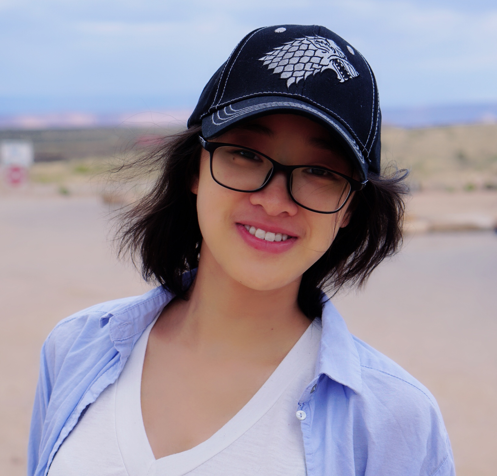
Ying Shen
Ying is a second-year master student in the Language Technologies Institute of School of Computer Science at Carnegie Mellon University. Her research interests lie in deep learning, multimodal machine learning, natural language processing and computer vision. In particularly, she is interested in understanding human multimodal language and develop agents that feature a more human-like intelligence with the help of deep learning. Prior to joining Carnegie Mellon, she received the Bachelor’s Degree in Software Engineering from Fudan University.
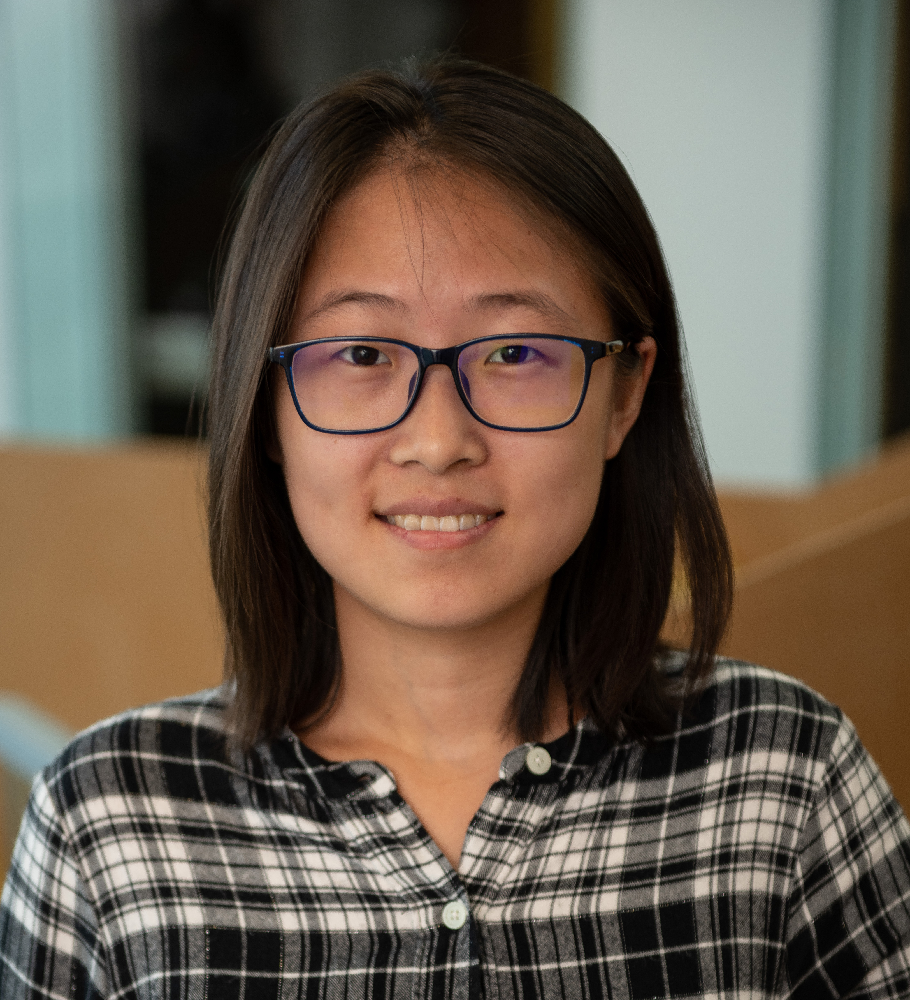
Irene Li
Irene Li is a Machine Learning master student at Carnegie Mellon University. Her research interest lies in speech recognition and natural language processing. She has worked on speech representation learning and removing social biases from sentence embeddings. She is currently working on multilingual style transfer. Irene obtained her B.S. in Computer Science from Carnegie Mellon University.
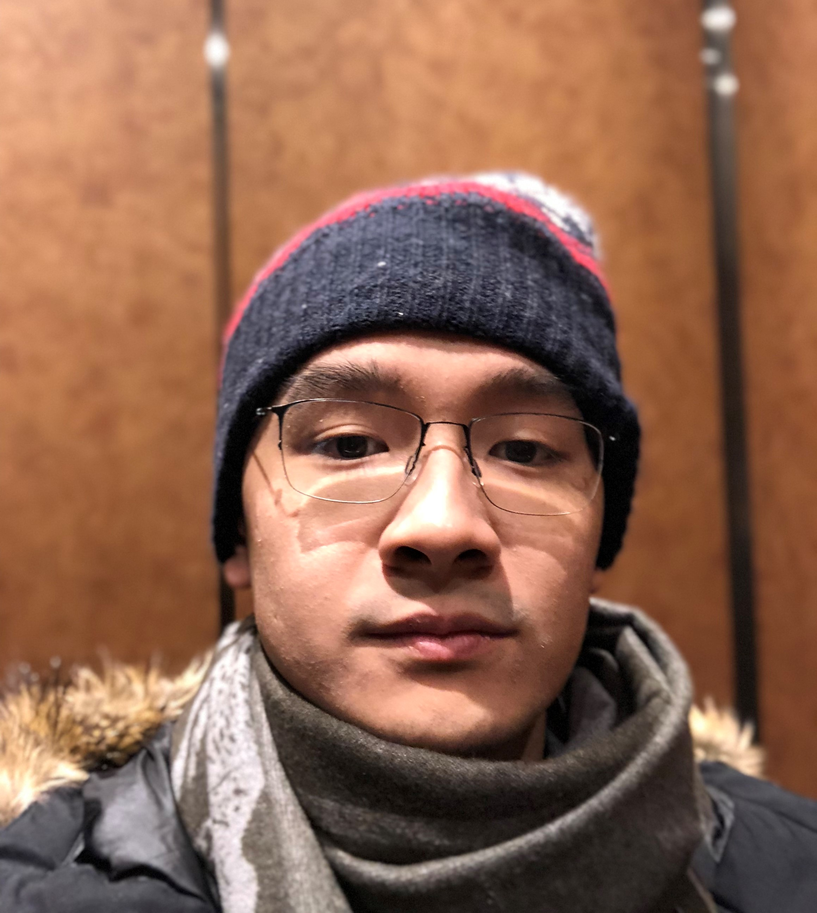
Zhun Liu
Zhun is a second-year master student in the Language Technologies Institute at Carnegie Mellon University. His research interests lie in deep learning, natural language processing, and multimodal machine learning. In particular, he is interested in understanding the representation and reasoning capabilities of deep learning models through the lens of concrete language and multimodal tasks. Prior to joining Carnegie Mellon, he obtained his Bachelor’s degree in Applied Mathematics at Wuhan University, where he spent his last semester working on hybrid neural/graphical models for linguistic structured prediction.
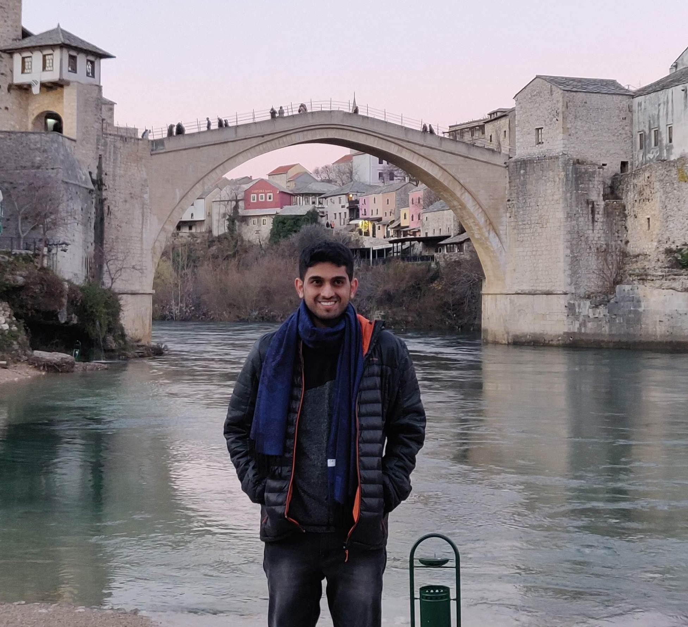
Sharath Rao
Sharath is a second-year master’s student in the Electrical and Computer Engineering program; his primary research interest lies in Machine Learning and Signal Processing. He is currently working on recognition and generation of backchannels in speech, and has previously worked on topics such as speech processing, emotion recognition, and graph convolutional networks.
Jianing “Jed” Yang
Jianing “Jed” Yang is a second-year Master’s student in Machine Learning. His research interest lies primarily in Natural Language Processing and Machine Learning. His projects include question answering bias analysis on multimodal QA datasets and multimodal fusion methods with unaligned multimodal language sequences. Before joining CMU, Jed received his Bachelor’s in Computer Science from Georgia Tech and was doing research with Prof. Jimeng Sun on Machine Learning with Healthcare.
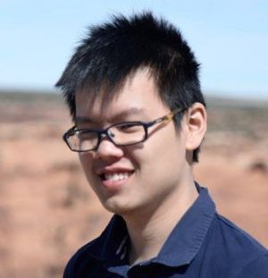
Yao Chong Lim
Yao Chong is a Master’s Student in Computer Science. His research interests include interpretable multimodal representations and models, computer vision, and natural language processing, with a focus on applications in human communications. Previously, he worked on facial landmark detection methods. He holds a Bachelor’s Degree in Computer Science from Carnegie Mellon University.
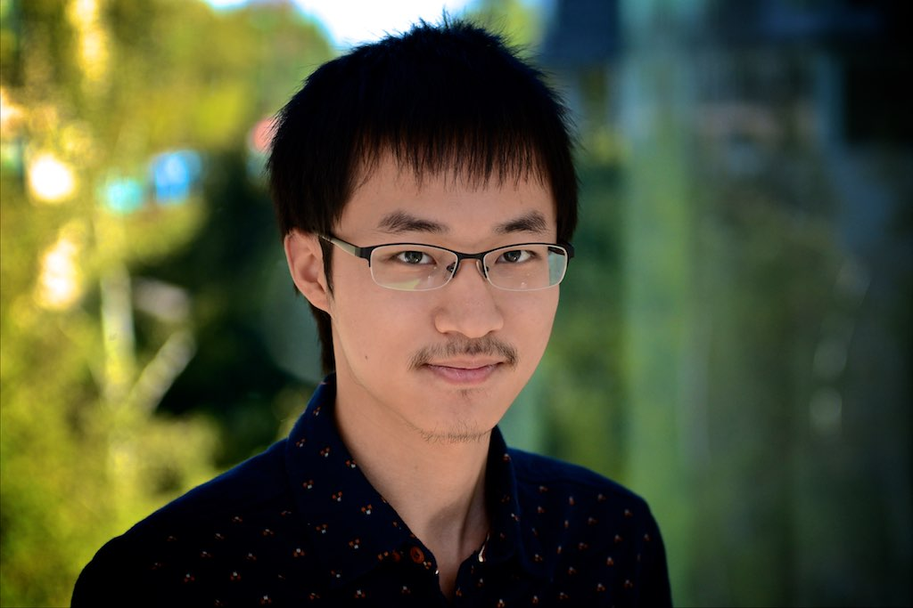
Minghai Chen
Minghai is a Master’s student in Intelligent Information Systems (MIIS) program at the Language Technologies Institute. His interests lie in deep learning for computer vision and natural language processing. Previously he worked on image captioning and recently he works on multimodal sentiment analysis under Prof. Morency. In the summer of 2017 he worked with a machine learning team at Google. He holds a bachelor’s degree in software engineering from Tsinghua University, China.
Sen Wang
Sen is a Master’s student in intelligent information System(MIIS) program at the Language Technology Institute. His interests focus on computer vision, natural language processing, and deep reinforcement learning. Previously he worked on suicidality inclination analysis advised by Tadas and Prof. Morency. For the summer of 2017, he worked at the discovery engineering team at Google. He holds a bachelor’s degree in Interdisciplinary Information Science from Tsinghua University, China.
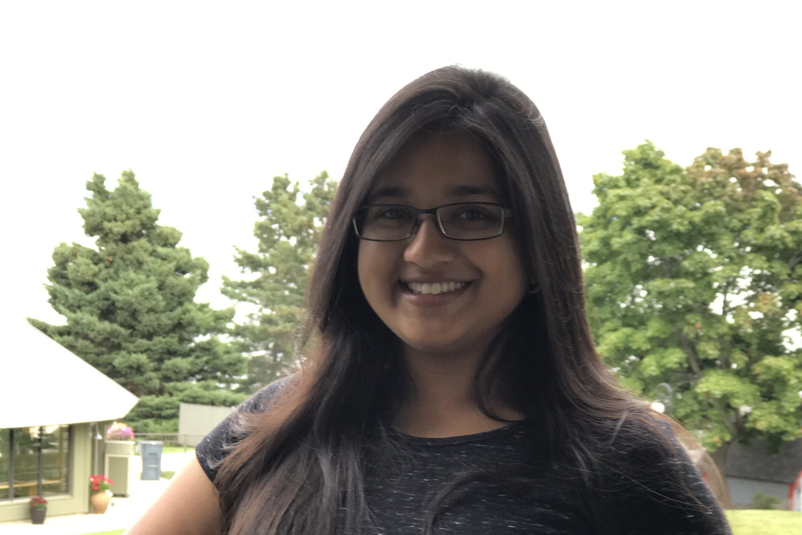
Supriya Vijay
Supriya Vijay was a Master’s student in the Intelligent Information Systems program under the Language Technologies Institute. Her interests lie in applied machine learning in the domain of healthcare. Her research is centered around the analysis of non-verbal behavior for identifying schizophrenic symptoms, and she worked on Visual Question Answering as a capstone project, under Prof. Morency. She holds a Bachelor’s degree in Computer Science from PES Institute of Technology, Bangalore, India.
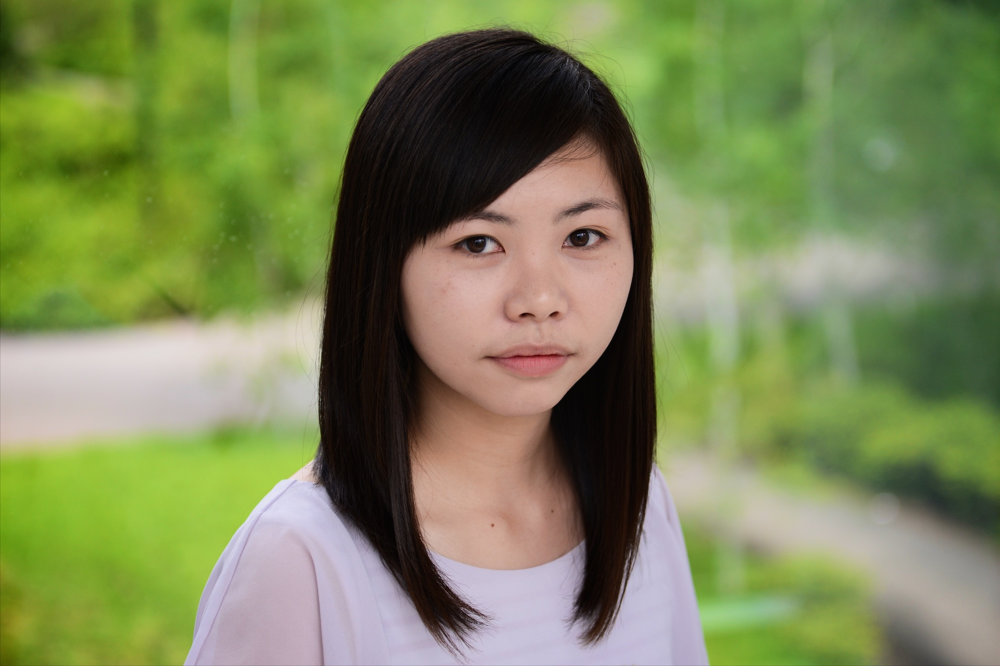
Christy Yuan Li
Christy Yuan Li was a master student in Computational Data Science program at Carnegie Mellon University. Her research interests lie in computer vision and machine learning. Before joining CMU, she earned a bachelor’s degree in Information Engineering from The Chinese University of Hong Kong.
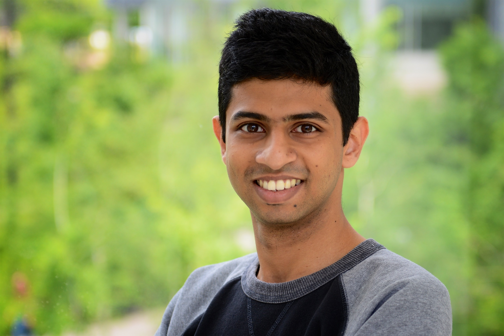
Jayanth Koushik
Jayanth was a student in the Computational Data Science program at LTI, working with Prof. Morency on the program’s capstone project. His interests are in computer vision, deep learning, and machine learning. He holds a bachelor’s degree in computer science from BITS Pilani, India.
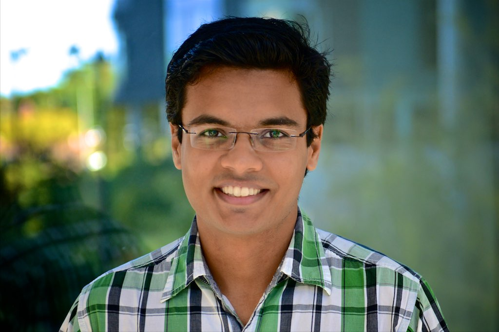
Deepak Gopinath
Deepak was a Master’s student in the Computational Data Science (MCDS) program at the Language Technologies Institute. His interests lie in deep learning for computer vision and language modeling, and machine learning. He works with Prof. Morency on a video captioning related problem for his MCDS capstone project. He holds a bachelor’s degree in computer science from BITS Pilani, India. He has worked with the machine learning teams at Facebook and Amazon and the search team at Linkedin.
Former Visiting Researchers
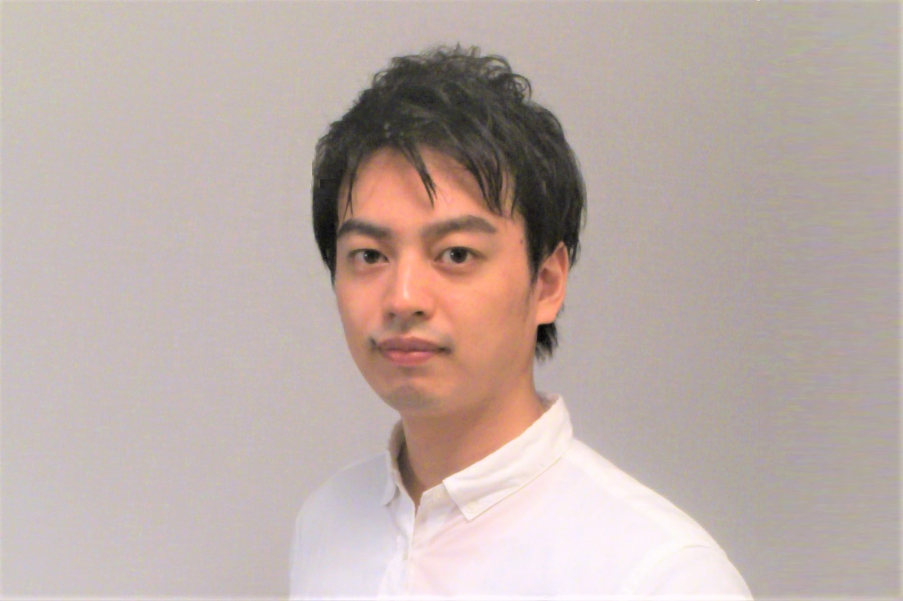
Ryo Ishii
Ryo Ishii is a visiting scholar at the Language Technologies Institute. He is a senior research scientist in NTT Media Intelligence Laboratories, NTT Corporation. He received his PhD in Infomatics from Kyoto University and his research focuses on Multimodal Interaction, Multimodal Machine Learning, Conversation Analysis, and Social Signal Processing.
Yukiko Nakano
Yukiko Nakano is a visiting scholar from April to September in 2019. She is a professor in the Department of Computer and Information Science at Seikei University, Japan, and leading the Intelligent User Interface Laboratory (IUI lab). With the goal of allowing more natural human-computer interaction, she has addressed issues on modeling conversations by analyzing human verbal and nonverbal communicative behaviors, and developing Multimodal Conversational Interfaces based on the empirical models.
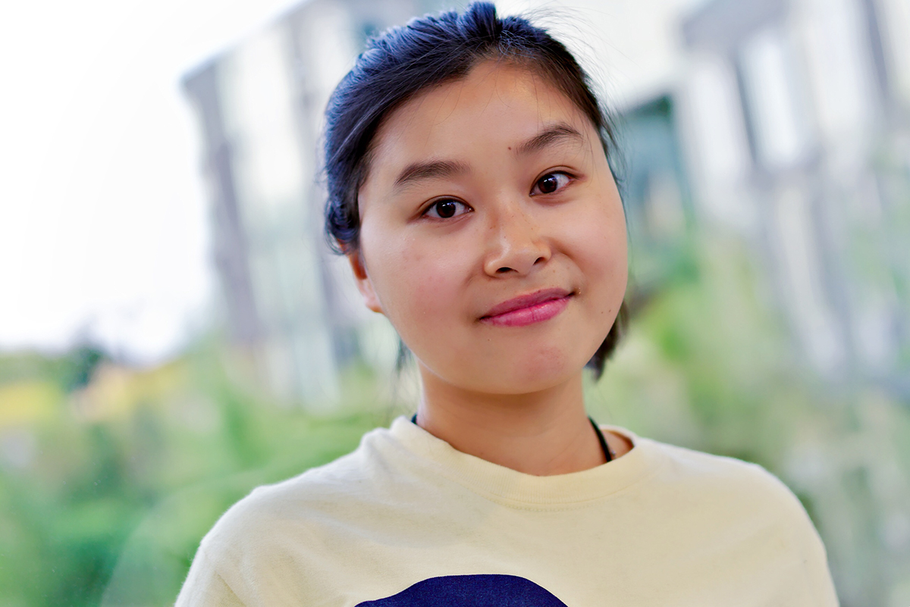
Qinglan Wei
Qinglan Wei was a visiting scholar at the Language Technologies Institute, Carnegie Mellon University. Her interests focuses on developing multimodal machine learning methods for emotion expression. Qinglan Wei is a PhD candidate at the College of Information Science and Technology in Beijing Normal University, supervised by Prof. Bo Sun. She holds her master degree in communication engineering from Communication University of China.
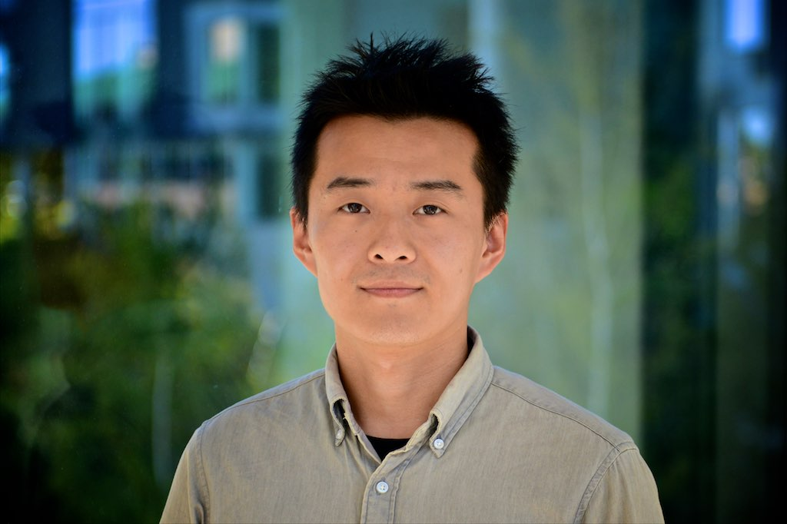
Liandong Li
Liandong Li was a visiting scholar at the Language Technologies Institute, Carnegie Mellon University. His research focuses on developing multimodal machine learning methods for the analysis of facial action unit and expression. Liandong is a PhD candidate at the College of Information Science and Technology in Beijing Normal University, supervised by Prof. Bo Sun. He also got his B.S. degree in computer science from Beijing Normal University.
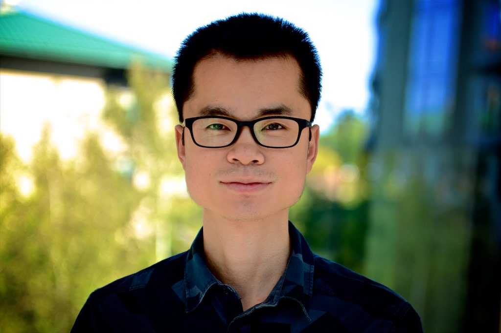
Wenjie Pei
Wenjie Pei was a visiting scholar at the Language Technologies Institute, Carnegie Mellon University. His research focuses on the time series modelling, including time series classification, time series similarity embedding learning, and time-series related applications. Wenjie is a PhD candidate at the Pattern Recognition Laboratory in Delft University of Technology, supervised by Dr. David Tax and Dr. Laurens van der Maaten.
Behnaz Nojavanasghari
Behnaz Nojavanasghari was a visiting scholar at the Language Technologies Institute, Carnegie Mellon University. Her research interests are in the intersection of affective computing, computer vision and machine learning with a particular focus on multimodal emotion recognition for children. Behnaz is a PhD candidate in computer science at the University of Central Florida. Before starting her graduate studies, she has received her B.S. in computer science from Amirkabir University of Technology (Tehran Polytechnic).
Former Lab Managers
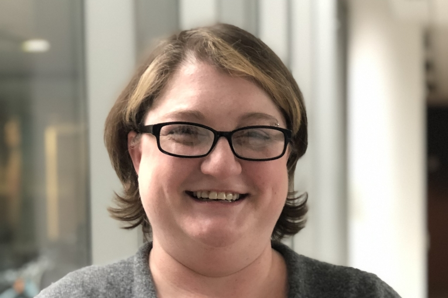
Nicki Siverling
Nicki is the MultiComp Lab’s Coordinator. She has 12 years of experience in managing social/behavioral research labs and is currently providing support on several grants. Before joining CMU, she served as Coordinator of the Affect Analysis Group at the University of Pittsburgh. Nicki received her B.A. from the University of Pittsburgh.
Former Staffs
Taylor Gautreaux
Taylor is a research associate in the MultiComp Lab. She provides support to several projects with a particular focus on data creation, processing and management. Her current research interests lie in helping intelligent systems understand human behaviors and social interactions. She previously completed a BA degree in Mass Communication with a focus on journalism at Nicholls State University.
Former Undergraduate Research Assistants
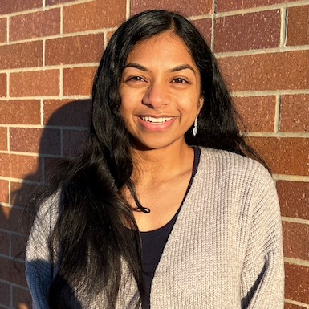
Aneesha Sampath
Aneesha is an undergraduate student at Carnegie Mellon University majoring in Artificial Intelligence and minoring in Language Technologies. Her research interests lie in Natural Language Processing and Multimodal Deep Learning. Her current project involves uncertainty quantification.
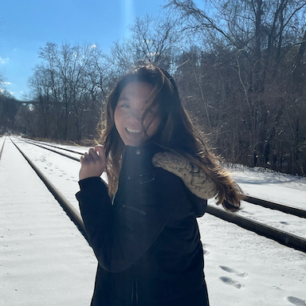
Shuyu Zhang
Shuyu Zhang is an undergraduate in the BXA program studying computer science and art. She is currently working on the CMU-MOSEAS project by organizing data, processing datasets, and teaching others to do the same. Her research interests include multimodal machine learning, multimodal language models, and ethics of machine learning.
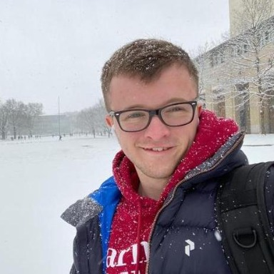
Edward Garemo
Edward Garemo is an undergraduate student in SCS studying computer science. He is interested in understanding and developing the theoretical foundations and practical implementations of automated generalizable learning models.
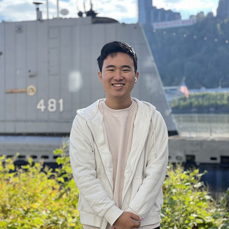
Evan Zhang
Hi, I’m Evan! I’m currently a freshman in SCS and plan on concentrating in machine learning. I became very interested in both software engineering and data science after completing various projects in both fields. In my free time, I like to play sports (ping pong, frisbee, basketball), listen to music (pop for sure), and hang out with friends.
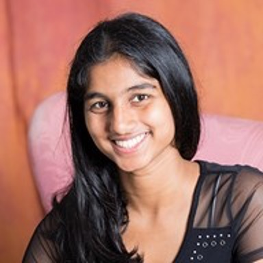
Niki Murikinati
Niki is a junior studying Computer Science and minoring in Machine Learning at Carnegie Mellon. Her interests lie in Multimodal Machine Learning and Natural Language Processing. She is currently working on a project involving generating speech with prosodic features from visual gesture data and text transcripts.
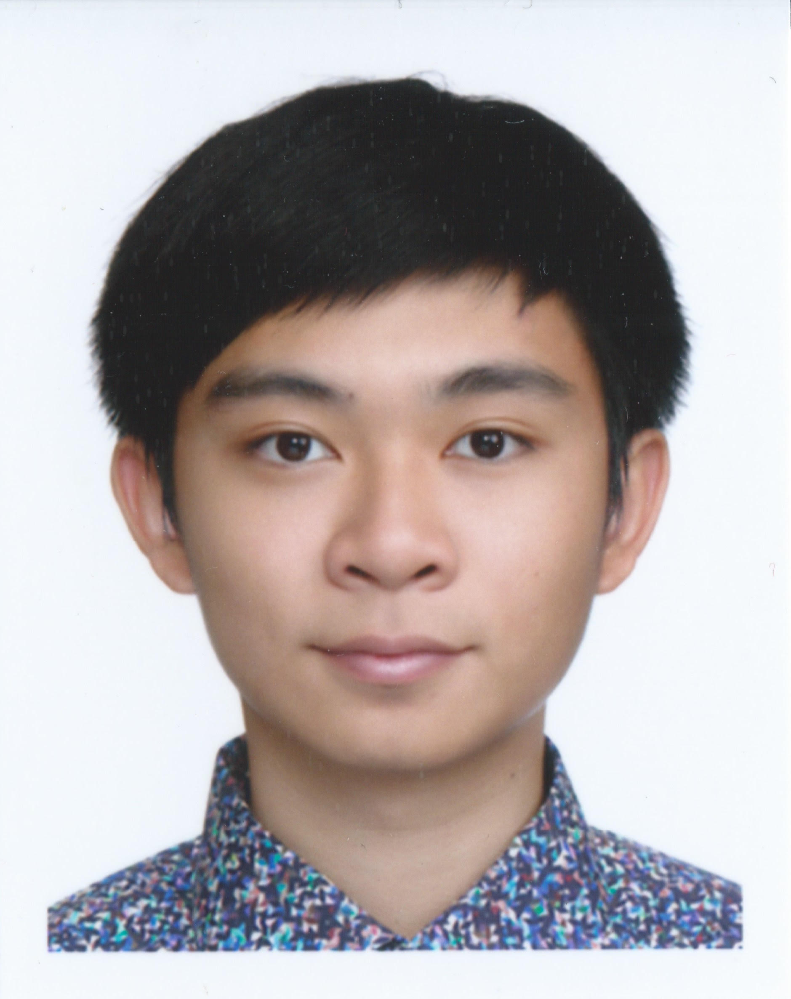
Arvin Wu
Arvin is an undergraduate computer science student at CMU. He is interested in Multi-Modal Machine Learning, Computer Vision, and Natural Language Processing. He is currently working on a data mining project for gesture generation research.
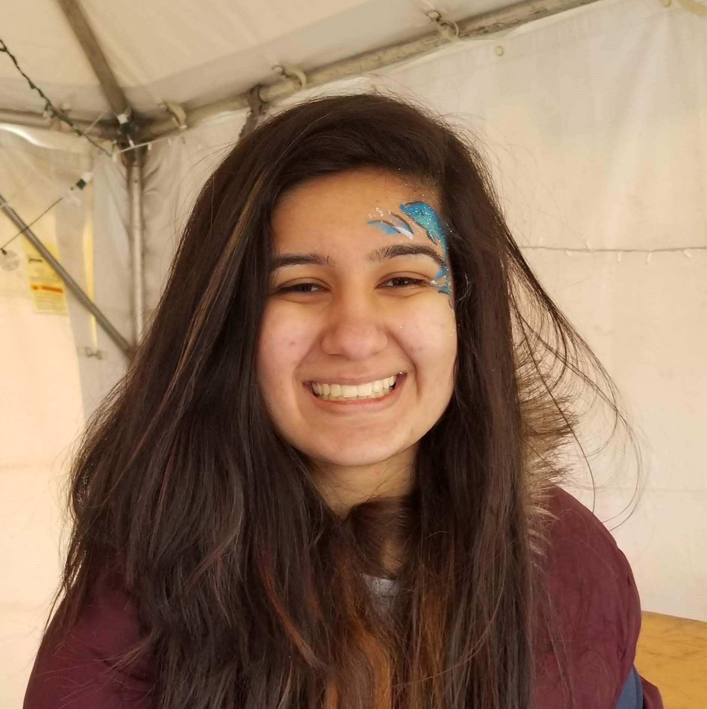
Shreya Bali
Shreya is a senior in the Carnegie Mellon School of Computer Science, minoring in Machine Learning. She is currently working on audio source separation and is broadly interested in audio/speech-related tasks, and reinforcement learning. Previously, she has worked on using machine learning to identify related ideas in scientific text and patents.
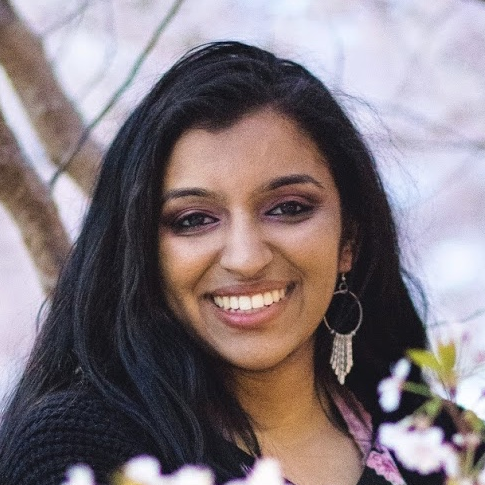
Gayatri Shandar
Gayatri Shandar is an undergraduate in the School of Computer Science at Carnegie Mellon University. She works with Dr. Girard where her current research interests include developing machine learning models to further facial computing and the understanding of human emotion and its influences on facial behavior.
Holmes Wu
Holmes Wu is an undergraduate student in Carnegie Mellon University. His current research project involves convolutional neural networks in 3D. His hope to gain in-depth understanding of the underlying principles of machine learning, especially deep learning.
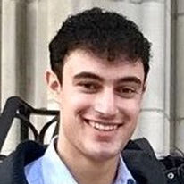
Alexander Schneidman
Alex Schneidman is an undergraduate student in Computer Science at Carnegie Mellon University. His research involves designing tools that collect and organize datasets to train machine learning models in social interactions. He hopes to continue studying machine learning to explore its applications in Artificial Intelligence and Computational Finance.
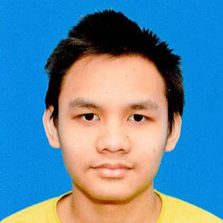
Michael Chan
Michael Chan is an undergraduate student at Carnegie Mellon University. His current work concerns using artifical intelligence to identify qualities of human social interaction through body language and speech from video clips. Michael hopes to learn more about machine learning overall and intends to use his knowledge to challenge the artistic and creative capabilities of machine learning models.
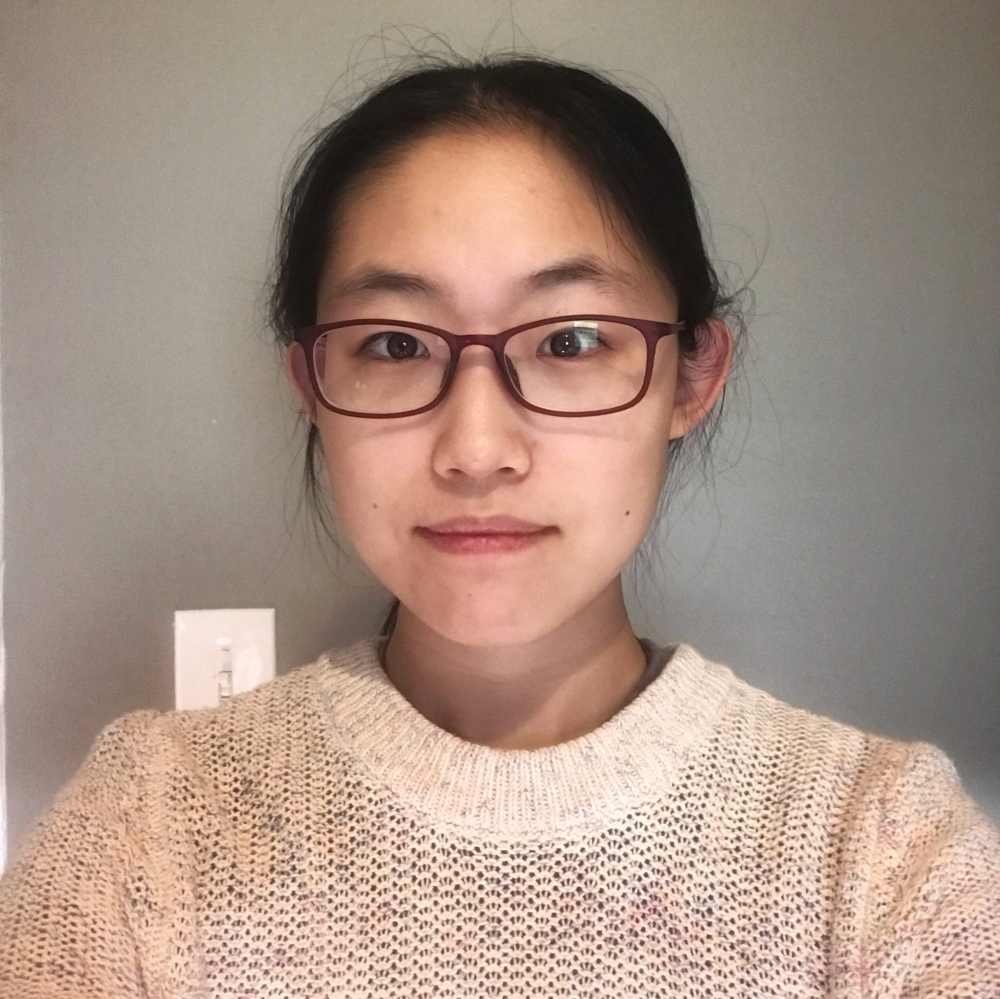
Katrina Jiao
Katrina is an undergraduate student in Computer Science. Her research interests lie in representation learning for Reinforcement Learning tasks and multimodal machine learning techniques. Her current work concerns improving the language grounding process in text-assisted RL in order to facilitate the transfer between similar video game environments.
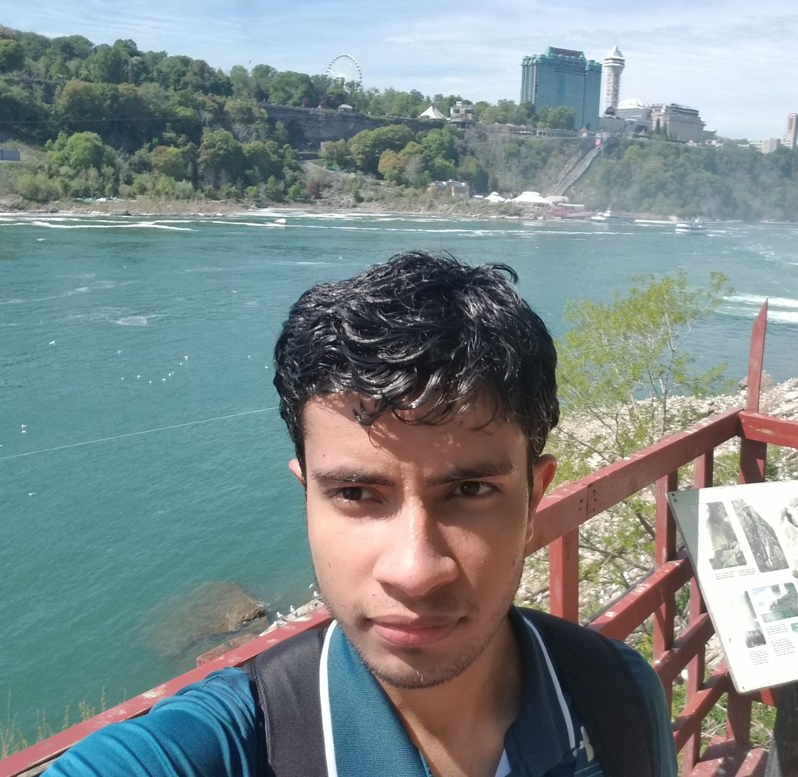
Azaan Rehman
Azaan is in his senior year as a Computer Science Undergraduate. His research interests lie in Multi-modal Machine Learning and Natural Language Processing, and his current goal is to produce a system that’s able to communicate, interact and adapt with humans in everyday life.
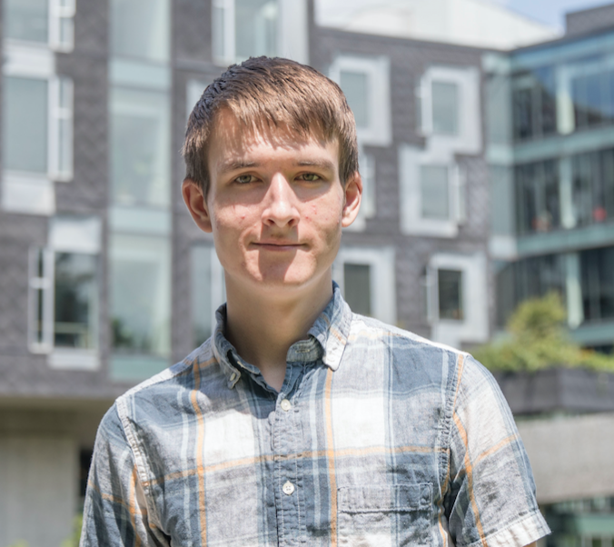
Jonathan VanBriesen
Jonathan VanBriesen was an undergraduate pursuing a major in Computer Science at Carnegie Mellon University. He was doing research under Amir Zadeh focused on multimodal sentiment analysis.
Edmund Tong
Edmund Tong was an undergraduate who is pursuing a Computer Science major and Language Technologies minor at Carnegie Mellon University. He has been an undergraduate researcher with the Multimodal Communication and Machine Learning Lab since October 2015. Notably, the work that Edmund has done with Amir Zadeh and Prof. Louis-Philippe Morency on applying deep multimodal networks to combat human trafficking is published at ACL 2017. Edmund’s research interests include multimodal representations and theoretical bases for deep learning, and he can be contacted at edtong AT cmu DOT edu.